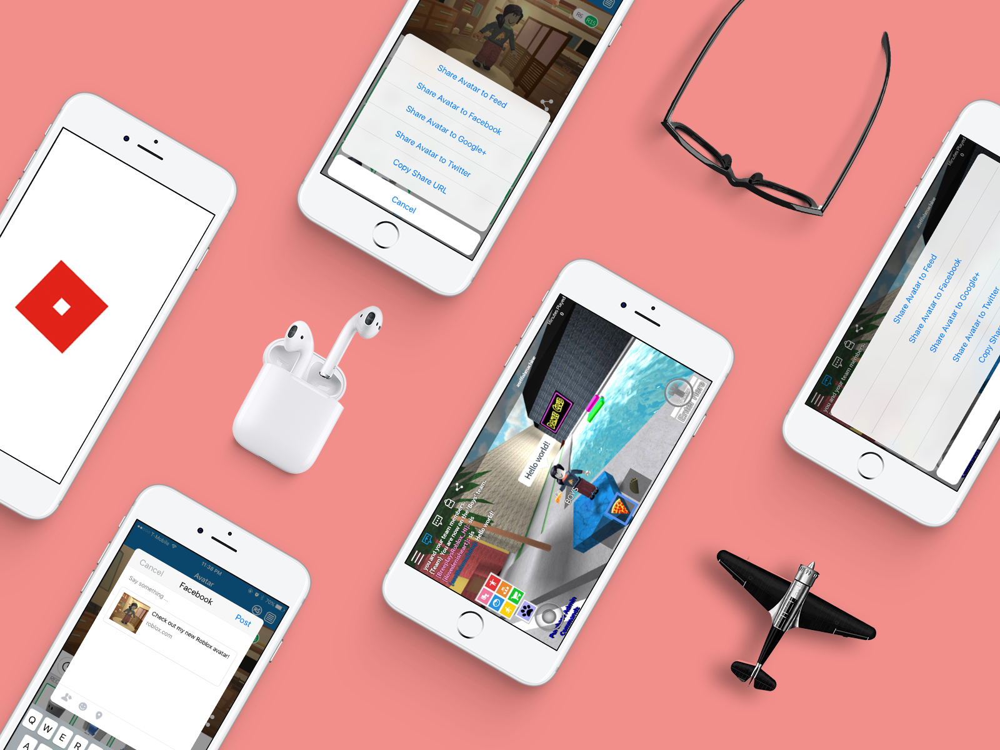
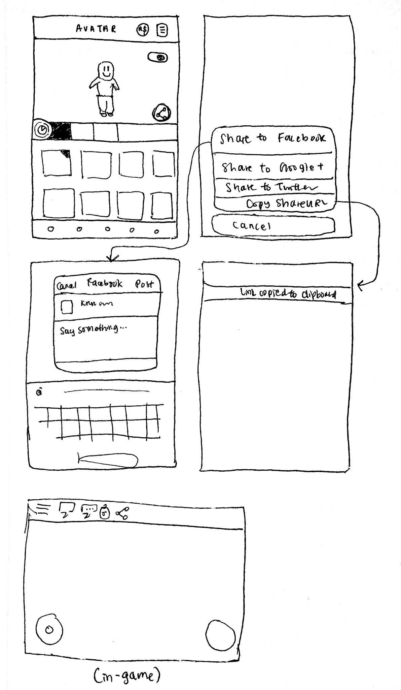

01
context
"We allow players to customize their Avatar as a core feature for our mobile products. Through
the avatar editor, players can customize their character with the various cosmetic items
acquired through purchases, events, and giveaways from our catalog."
Goal: Design a feature where you can share an interesting image of your avatar on social media.
02
my role
As this was an individual design test, I took in hand all parts of the designing, research, and decision making.
03
research
These user stories were given as part of the test scenario:
"As a user, I want to customize the image of my avatar so that it looks interesting and fun for all my friends to see on their social feeds."
"As a user, I want to share with my friends/social media an updated avatar that I made in."
Based on the user stories, users should be able to:
- Share on the social feed of Roblox, which currently supports a "status" type text
- Share on other social media platforms (Facebook, Twitter, Google+ are the current share options on other features in Roblox)
- Share from the avatar editor portal
- Share from in-game moments
To start off, I wanted to better understand the Roblox community as a whole. With limited exposure to the product, I wanted an inside look on how the social system currently works. These points were drawn from spending some time playing the games and exploring the social community, as well as some research from past Roblox development posts or game updates.
- In 2014, Roblox underwent a transition from having "friends" and "best friends" to having "friends" and "followers". This basically meant that you could follow other people to have their updates in your social feed, but they wouldn't see yours unless you were mutally accepted friends.
- This update made it easier to play and join games, compete against friends, compete with your friends (partying), manage your friends list, and see more relevant things on your social feed.
- This change also affected game developers, making it easier to obtain more meaningful control over game permissions (e.g. having a friends-only leaderboard).
I also did some research on existing "share" systems implemented in Roblox. This is important to understand to ensure consistency with existing designs throughout my process.
- Roblox currently has options to share a place they, or somebody else, created.
- When shared, the place will be shared to their selected social media (Facebook, Twitter, Google+, or via a direct URL).
- When liked, the place will be shared to Facebook, if the user is pre-connected to their Facebook account.
- Should this feature be shared to both social media as well as Roblox's internal social feed? Allowing the photo to share on the social feed may impose the problem of overriding an existing status, but it would provide many benefits to boost the social atmosphere.
- If shared in Roblox's internal social feed, would users be able to like their friends' posts? The current system does not allow people to like other statuses, as it is just a static item in their feed. The only "like" feature currently existing is for liking a game or place. In this case, it may be best to have likes as a feature for future consideration.
04
value prop
This new feature, if implemented, would add to the existing value of community and being social in Roblox. Users make and add tons of friends, interact with friends in game via parties and competitions, message friends as a form of communication, update their statuses which appear in their friends' and followers' social feeds.
Allowing users to share their new avatar updates via the avatar editor is valuable in promoting the uniqueness and individuality of each avatar and player.
Allowing users to share in-game moments of their new avatar doing something cool in-game promotes not only the uniqueness of that player, but also the game they are currently playing in.
The value of sharing across social media platforms boosts Roblox's network and awareness outside of the existing community, while the internal sharing on Roblox's social feed strengthens the existing internal community.
The differentiation of users sharing via this new feature rather than screenshotting something and sharing externally appears in that users are not able to load the screenshot image in their Roblox social feed as a status. In addition, using this internal share feature will also automatically link the image to the Roblox user's profile, or a unique URL to the custom avatar, similar to the current sharing/liking process of places.
05
process
First, I wanted to clearly establish what I wanted to create to tackle this problem. After doing the inital research, I had a clearer understanding of
the existing related features on Roblox and
the current community aspects of Roblox.
I want to make this feature a fluid
extension and continuation of the existing product, rather than feeling like a separate entity.
Screenshot of the existing share feature for games/places

Brainstorming sketches of share button placement
Clearer map of share options
Mockups of share flow
- Standardizing the share button icon with the existing icon that is available when sharing games/places (only visible on web)
- Adhering to iOS mobile design standards
- Keeping in mind the audience - younger childern - and designing a simple, straightfoward concept flow
- Allowing sharing internally (on "My Feed") and externally (other social media sites)
- View a simple InVision prototype.
06
results & takeaways
- For future iterations, I would like to explore more of the logic behind Roblox's current "like" system and how that may tie into the social feed. In addition, I would like to explore how this
shared avatar would look on the user's feed.
- I would like to further explore web and mobile standardization. Given the time frame and scope of this assignment, I focused primarily on mobile; however, I believe this feature would be useful and important for both platforms.
- I would like to explore the Android design, though fairly similar, but still critical to the deployment of such a feature.
- With more time, I would also like to better explore and understand possible edge cases of users.
- To expand on this project, I would also love to gain more insight on the "whys" behind the feature, as well as the numbers and research that may currently exist for similar features (for example, how often users currently share links to social sites outside of Roblox). Similarly,
it would be very important to iterate and collaborate with existing UX designers on the Roblox team.
- An important takeaway of this assignment was the value of research. Jumping straight into the assignment, I felt lost and overwhelmed by a product I was not extremely familiar with. However, with some time Googling and using the product, I began to better understand not only the product itself, but also the community of the product, which was critical to this assignment.
- Though seemingly a simple feature to design, I learned how much complexity actually exists behind the simplicity. For example, I had to fully understand the product, the user, and how to
keep things consistent and intuitive, in order to build this "simple" feature.
Thank you for reading, Roblox Design team!
 context
context  my role
my role research
research value prop
value prop process
process results & takeaways
results & takeaways